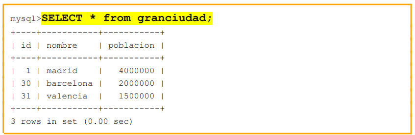
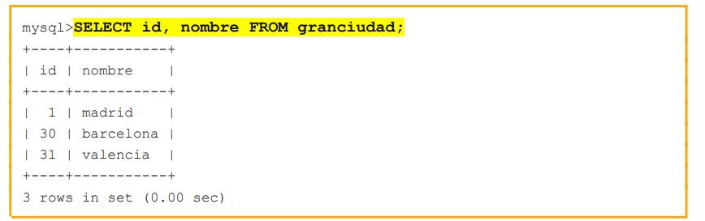
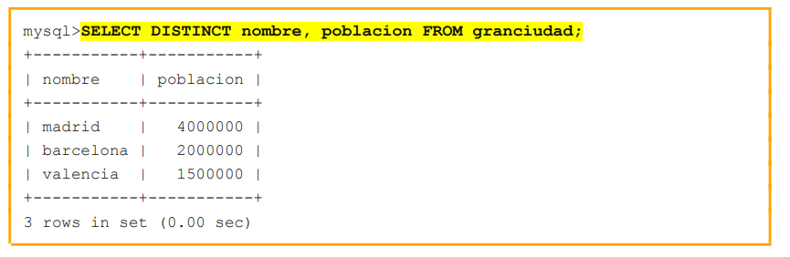
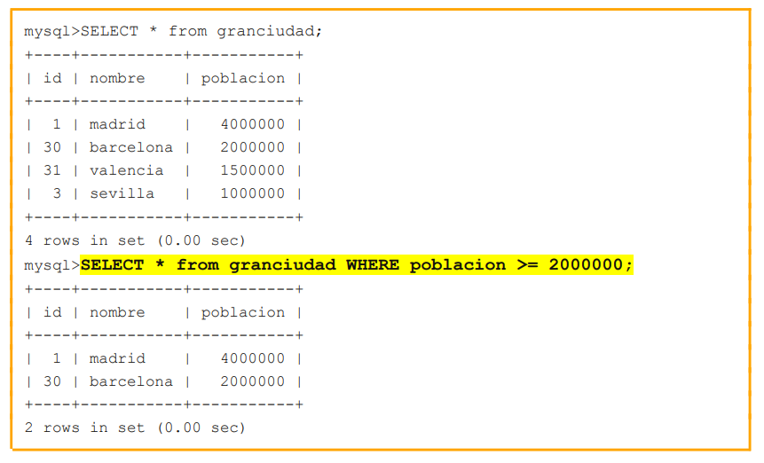
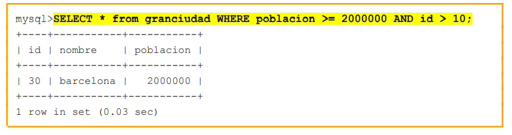
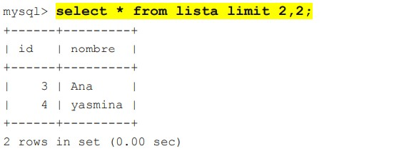
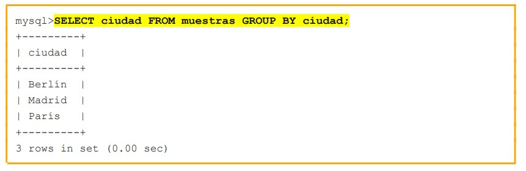
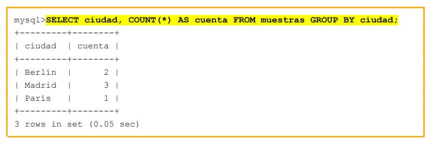

CONSULTAR TABLAS
Consultar una tabla en una base de datos sirve para obtener información específica almacenada en esa tabla.
- Recuperar datos
- Filtrar datos
- Actualizar datos
- Eliminar datos
Comandos para consultar una tabla
- SELECT * FROM...
- SELECT ... FROM...
- SELECT ... AS ... FROM...
- SELECT DISTINCT ... FROM...
- SELECT ... FROM ... WHERE...
- SELECT ... FROM ... WHERE ... AND...
- SELECT ... FROM ... LIMIT ..., ...
SELECT * FROM...
Si queremos mostrar todos los registros de una tabla usaremos SELECT * FROM y el nombre de la tabla.
SELECT...FROM...
Podemos realizar una consulta donde se nos muestre solo las columnas que nos interesa.
SELECT DISTINCT...FROM...
En una consulta podría haber registros repetidos, si quisiéramos evitar mostrar las filas repetidas usaríamos el comando DISTINCT.
SELECT...FROM...WHERE...
Si queremos filtrar las filas que aparecen en la consulta podemos usar la sentencia WHERE.
SELECT...FROM...WHERE...AND
Incluso anidar 2 condiciones usando el comando AND.
La cláusula LIMIT
La cláusula LIMIT puede usarse con 2 parámetros. Cuando se usan ambos, el primero muestra la fila a partir de la que debemos empezar a mostrar registros, y el segundo parámetro muestra el número de filas a mostrar (contando desde la primera)
AGRUPAR FILAS
Agrupar filas en una base de datos es útil para realizar operaciones de resumen y análisis de datos más avanzadas.
- Análisis de tendencias
- Optimización de consultas
- Segmentación de datos
Comandos para agrupar filas
- SELECT … FROM … GROUP BY…
- SELECT … COUNT(*) FROM … GROUP BY…
- SELECT … COUNT(*) AS … FROM … GROUP BY…
- SELECT … MAX(…) FROM … GROUP BY … HAVING MAX(…) …
SELECT … FROM … GROUP BY…
Es posible agrupar filas en la salida de una sentencia SELECT según los distintos valores de una columna, usando la cláusula GROUP BY.
SELECT … COUNT(*) FROM … GROUP BY…
Pero la diferencia principal es que el uso de la cláusula GROUP BY permite usar funciones de resumen o reunión. Por ejemplo, la función COUNT().
SELECT … MAX(…) FROM … GROUP BY … HAVING MAX(…) …
La cláusula HAVING() permite hacer selecciones con GROUP BY en columnas calculadas con funciones de grupo, como MAX(), MIN(), AVG(), COUNT()… Se podría entender como un WHERE para usar junto a GROUP BY().